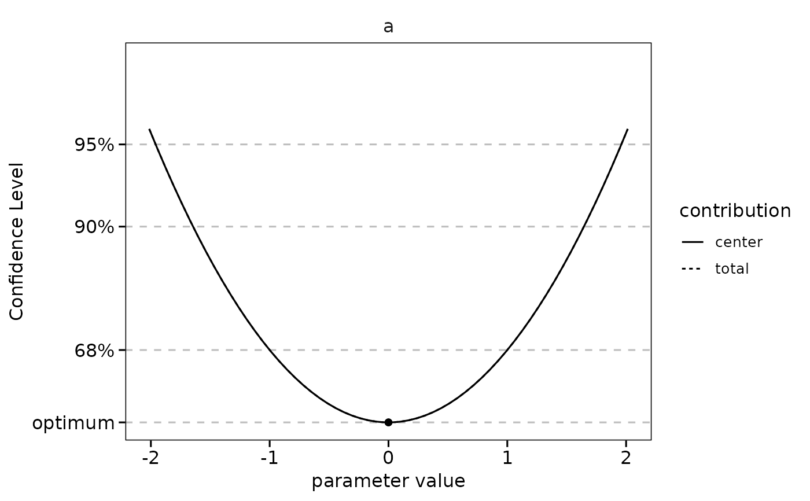

Direct Sum of Objective Functions
Examples
## Three objective functions
prior <- structure(rep(0, 5), names = letters[1:5])
obj1 <- constraintL2(mu = prior, attrName = "center")
obj2 <- constraintL2(mu = prior + 1, attrName = "right")
obj3 <- constraintL2(mu = prior - 1, attrName = "left")
## Evaluate the first objective function on a random vector
set.seed(1)
pouter <- prior + rnorm(length(prior))
obj1(pouter)
#> value
#> ==================
#> 3.777941
#> gradient[1:5] (full length = 5)
#> ==================
#> a b c d e
#> -1.2529076 0.3672866 -1.6712572 3.1905616 0.6590155
#>
#> hessian[1:5,1:5]
#> ==================
#> a b c d e
#> a 2 0 0 0 0
#> b 0 2 0 0 0
#> c 0 0 2 0 0
#> d 0 0 0 2 0
#> e 0 0 0 0 2
#>
#>
#> attributes
#> ==================
#> center 3.777941
## Split into fixed and non-fixed part
fixed <- pouter[4:5]
pouter <- pouter[1:3]
obj1(pouter, fixed = fixed)
#> value
#> ==================
#> 3.777941
#> gradient[1:3] (full length = 3)
#> ==================
#> a b c
#> -1.2529076 0.3672866 -1.6712572
#>
#> hessian[1:3,1:3]
#> ==================
#> a b c
#> a 2 0 0
#> b 0 2 0
#> c 0 0 2
#>
#>
#> attributes
#> ==================
#> center 3.777941
## Fit and profile
myfit <- trust(obj1, pouter, rinit = 1, rmax = 10, fixed = fixed)
myprof <- profile(obj1, myfit$argument, "a", fixed = fixed)
plotProfile(myprof)

## Sum of objective functions
obj <- obj1 + obj2 + obj3
obj(prior)
#> value
#> ==================
#> 10
#> gradient[1:5] (full length = 5)
#> ==================
#> a b c d e
#> 0 0 0 0 0
#>
#> hessian[1:5,1:5]
#> ==================
#> a b c d e
#> a 6 0 0 0 0
#> b 0 6 0 0 0
#> c 0 0 6 0 0
#> d 0 0 0 6 0
#> e 0 0 0 0 6
#>
#>
#> attributes
#> ==================
#> center 0
#> right 5
#> left 5